DSlab Software Manual
A publication by Donatoni Macchine S.r.l.
Software Version: 1.3.0.0
Manual Version: 1.0
Date: 28/01/2026
General Information
The information contained in this document applies only to the software versions indicated on the title page.
Not all functions provided by the product may be described in this documentation; in such cases, Donatoni Macchine is not obliged to guarantee these functions or preserve them in future versions.
Purpose of the manual
This manual provides the operating instructions required for a good understanding of the DSlab program and useful information for troubleshooting.
DONATONI MACCHINE SRL remains available to provide prompt and accurate technical assistance and any support that may help ensure optimal operation and maximum performance of DSlab.
The Developer reserves the right, at its discretion, to modify this publication and the data contained herein whenever deemed necessary for the technical or commercial improvement of the product.
The system allows the user to configure, load and view slab information. The software can be used to:
Load individual new slabs
Bulk-load new slabs with the same configuration
Manage loaded slabs
Configure additional features
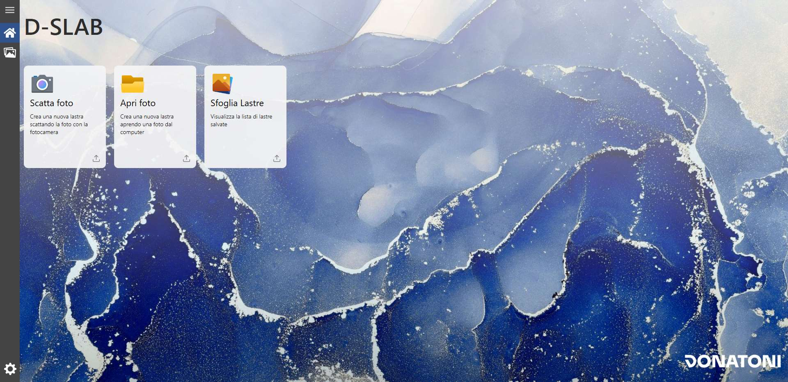
Sidebar
This bar appears on all the main pages available from it: “Home”, “Browse Slabs” and “Machine settings”.
Menu | |
Home | |
Browse Slabs | |
Machine settings |
Home Screen
When the application starts, the following initial screen is displayed:
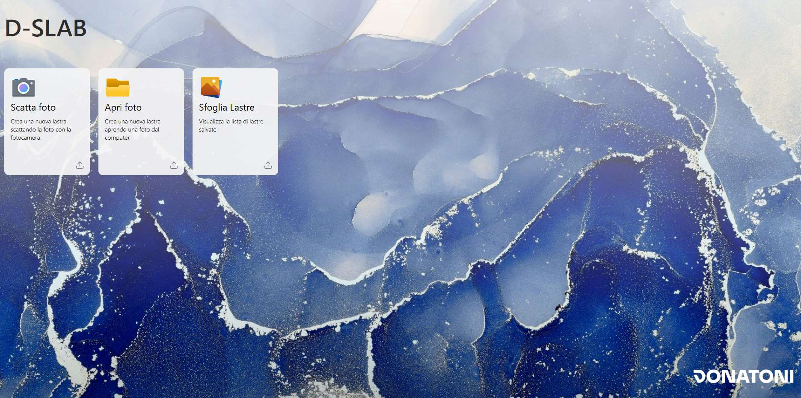
The cards shown below allow different actions to be performed by clicking each one.
Each card is described individually in the following chapters.
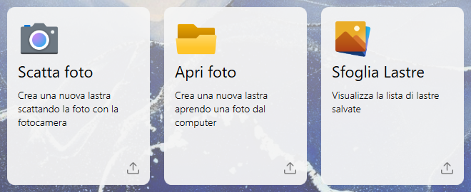
Take Photo | |
Open Photo | |
Browse Slabs |
Open Photo
This function allows the user to import an image of a slab by selecting it directly from the device storage.
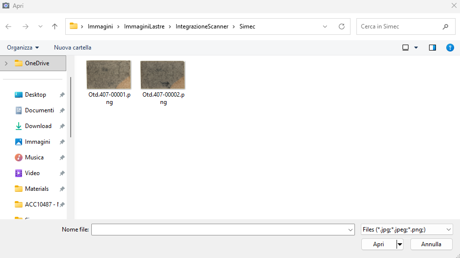
After selecting an image, the user can set its parameters, as shown in the following example screen:
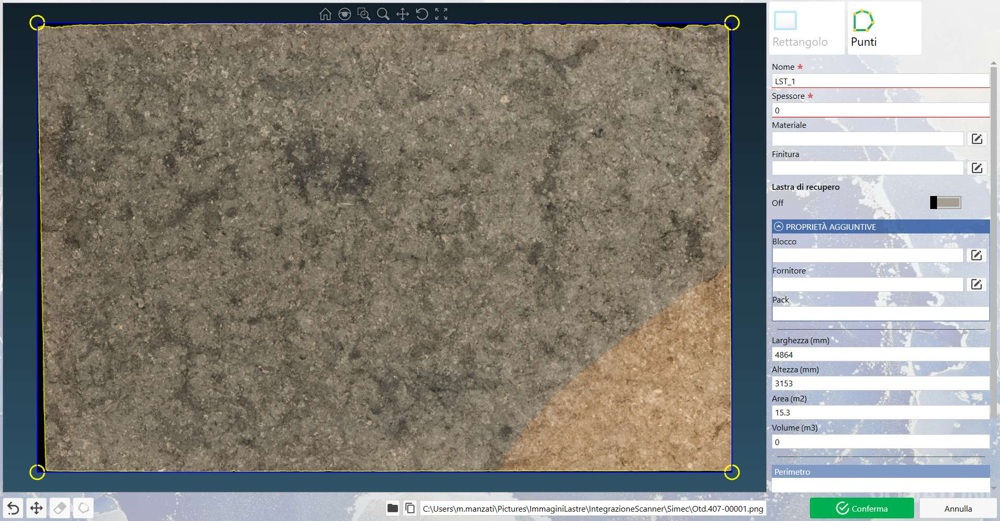
This function imports an image of a slab using a camera connected to the device.
When the panel opens, the following screen is displayed, initially without a preview image:
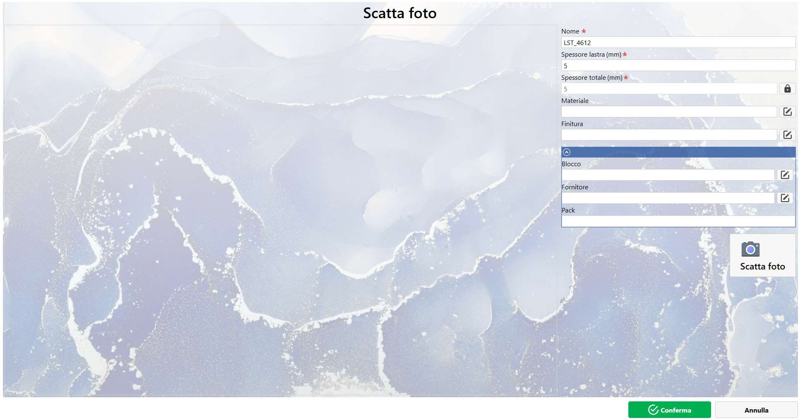
Photo Preview
The Photo Preview is the area occupying most of the central and left-hand part of the panel.
The preview of the currently loaded image can be loaded by pressing the “Take Photo” button.
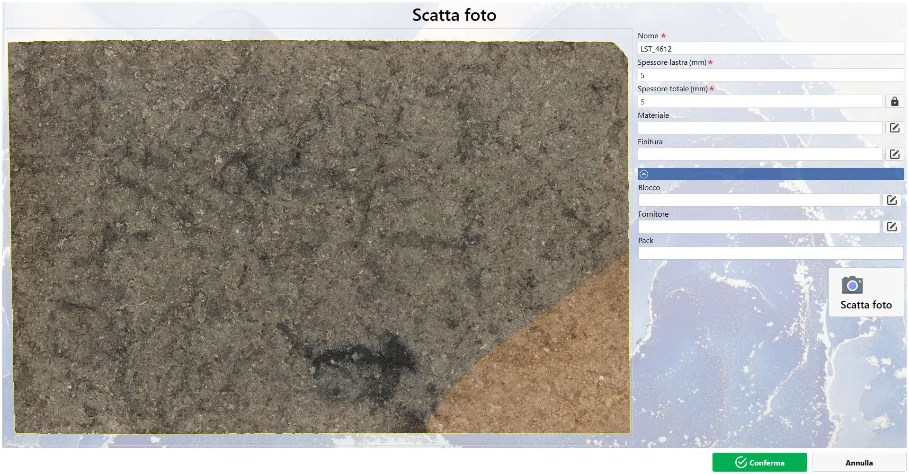
Parameters
The Parameters section is located at the top right of the panel and contains the following types of parameters:
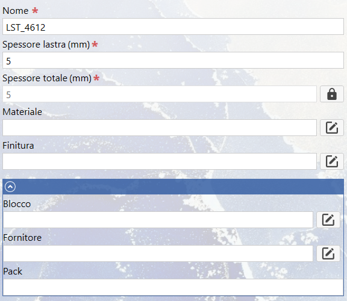
Main Parameters
Name | |
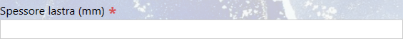 | Slab thickness |
Total Thickness | |
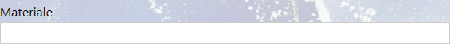 | Material |
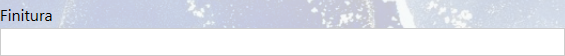 | Finishing |
Context Parameters
Block | |
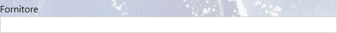 | Supplier |
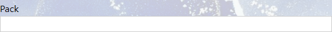 | Pack |
Parameter Buttons
Some parameters have dedicated buttons on the right that allow the user to perform specific actions:
Lock/Unlock Parameter | |
Select |
Take Photo Action
Take Photo |
Bottom Bar
Confirm | |
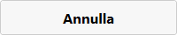 | Cancel |
In this panel, the user can edit and manage a single slab.
The following example window is displayed both when the user adds a new slab and when an existing slab is edited using the dedicated section:

Slab Preview
This section occupies the central and left-hand part of the panel and displays the slab image.
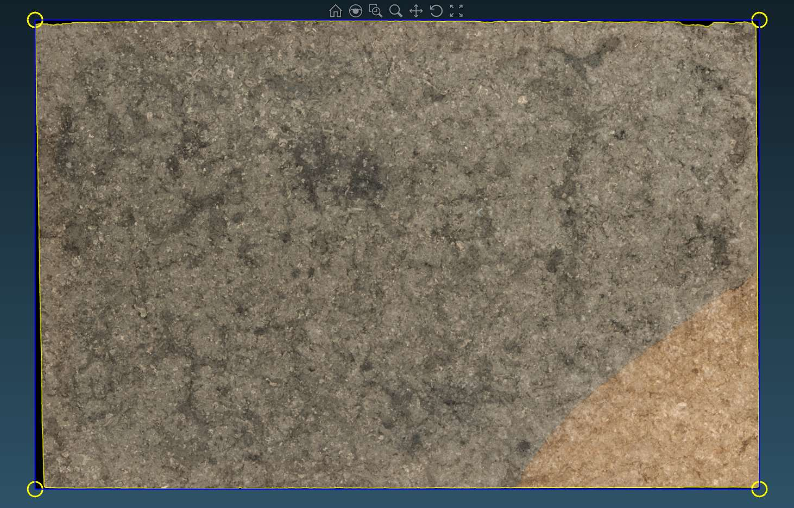
View Tools
These tools, located at the top center of the Slab Preview, allow the user to perform the following actions:
Home | |
Magnifying Glass | |
Zoom Window | |
Zoom | |
Pan | |
Rotate | |
Zoom Fit |
Perimeter
The perimeter can be set in the Slab Preview and is displayed as follows:
Perimeter | |
Corner | |
Side |
Perimeter Tools
Rectangle | |
Points |
Perimeter Actions
Remove Last Point | |
Move Perimeter | |
Delete Point | |
Close Perimeter |
Slab Defects
All perimeters present in the image are shown at the bottom of the Parameters section.
At the bottom of the Parameters section, the last area contains a Perimeter list indicating how many perimeters are present.
The first always indicates the perimeter of the entire slab; the others have a red perimeter to indicate defective areas.
The first perimeter in the list refers to the perimeter of the entire slab.
Each subsequent perimeter is shown in red and indicates defective areas to the user, as shown in the following example image:
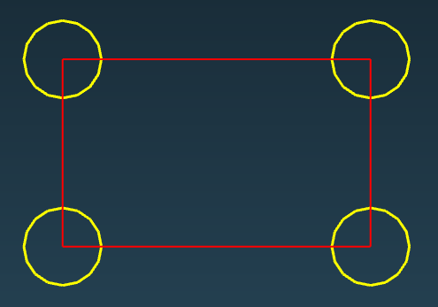
Buttons
Add | |
Remove |
Parameters
Main Parameters
Name | |
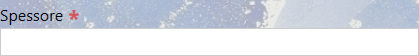 | Thickness |
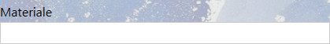 | Material |
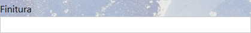 | Finishing |
Recovery Slab |
Additional Properties
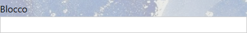 | Block |
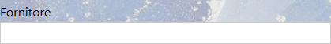 | Supplier |
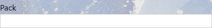 | Pack |
Perimeter Properties
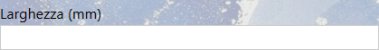 | Width |
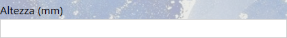 | height |
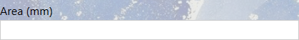 | Area |
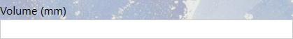 | Volume |
File Location
In the lower section of the Edit Slab panel, the user can view and access the location of the slab image and parameter files.
The absolute path of the image linked to the slab is set automatically. The following buttons are also available to the user:
Open | |
Copy |
This tab allows slabs in the system to be viewed, searched, edited, deleted and exported.
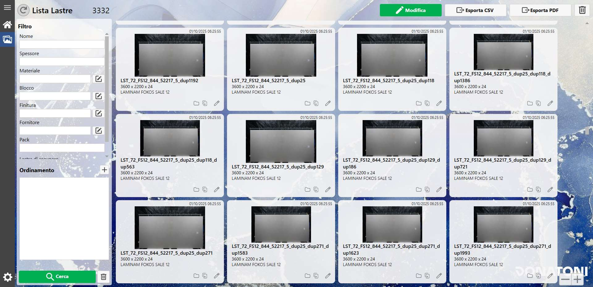
Structure
The tab is divided into the following sections:
Filters and Sorting
Slab List
Actions
Filters and Sorting
This section allows filters to be set and slabs to be sorted according to their parameters, using the “Search” action.
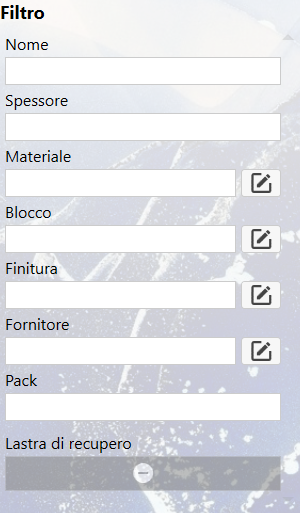
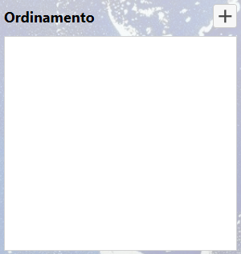
Filter
Most filters are used as shown in the Edit Slab panel.
The only exception to the parameters shown previously is the Yes/No parameter (for example, “recovery slab”), which has three selectable states:
Any | |
Yes | |
No |
Sorting
The advanced sorting system allows the “Add” button at the top right to be used to select the sorting parameters, their order, and whether they are ascending or descending.
Add |
When a parameter is added to the sorting list, it appears as follows:
It has three action icons:
Move | |
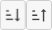 | Ascending/Descending Sorting |
Remove |
Actions
Search | |
Clear Filters | |
Reload |
Slab List
This section displays a preview of the slabs in the system, with options to filter and sort the view.
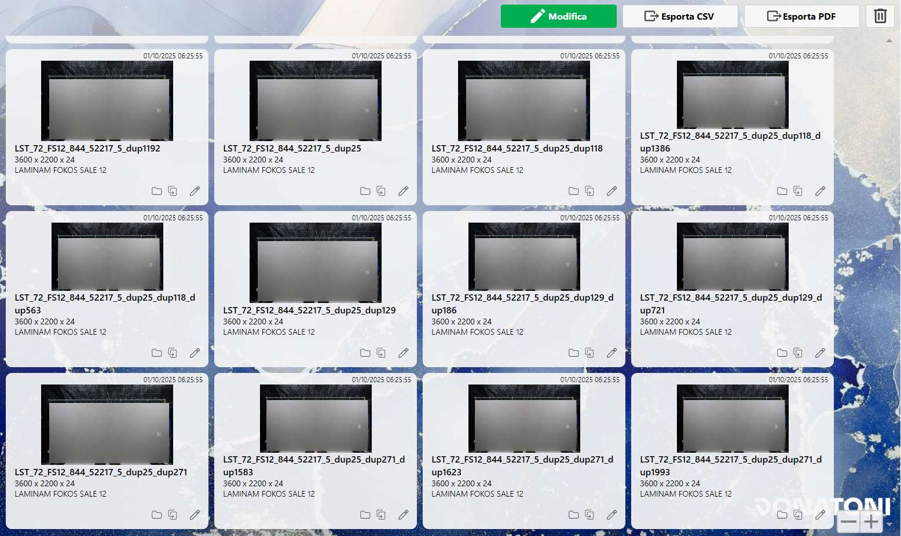
Card
A single card can be selected for editing or deletion.
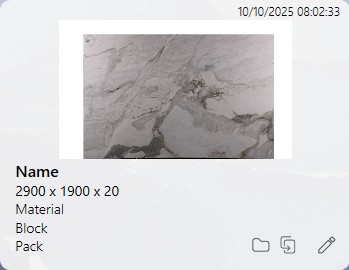
The following information can be seen in the image:
Creation Date: indicates the date and time when the slab was added to the system (top left);
Slab Preview: displays the slab image;
Name: the first text value (in bold) indicates the unique slab code
Dimensions: indicates the slab dimensions (Width x Height x Thickness)
Material: material code set for the slab
Block: indicates the block set for the slab
Pack: indicates the pack set for the slab
In addition to the information, buttons are available:
Open Folder | |
Copy | |
Edit |
Layout Size
At the bottom right, two buttons can be used to enlarge or reduce the cards, making the slabs easier to view or allowing more slabs to be displayed at the same time.
Zoom in | |
Zoom out |
Actions
Edit | |
Export CSV/PDF | |
Delete |
The following screen is the Settings page, which allows the user to configure various system parameters or view other non-editable parameters to understand the system.
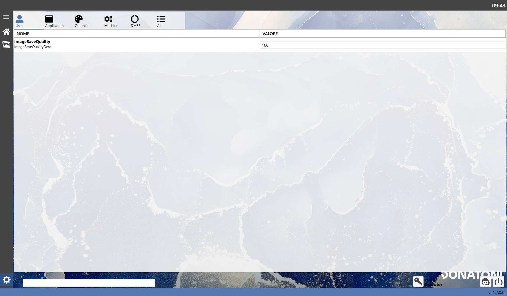
Tabs
The settings are divided into sections that can be displayed by clicking the icons at the top:
User | |
Application | |
Graphic | |
Machine | |
DMES | |
All |
User
Title | Description | Input Format |
ImageSaveQuality | Indicates the quality used when saving images. | Integer |
Application
Title | Description | Input Format |
Language | Allows the system language to be selected. | Selection(IT, EN) |
Decimal Digits Numbers | Indicates how many decimal places of a numeric value are displayed after the decimal separator. | READ ONLY |
Decimal Digits Numbers Accuracy | Indicates how many decimal places of a precision numeric value are displayed after the decimal separator. | READ ONLY |
Current Project | Indicates the path of the system project currently running. | READ ONLY |
Current Solution | Indicates the path of the system solution currently running. | READ ONLY |
Path Remote Assistance Program | Indicates the path where the Remote Assistance program is located. | READ ONLY |
DateTime format for statistics | Specifies the date and time format. | READ ONLY |
Time format for statistics | Specifies the time format. | READ ONLY |
Graphic
Title | Description | Input Format |
Perimeter Handles Diameter | Allows the diameter of the perimeter corner selection circles to be set in 2.3 Edit Slab. | Integer |
Machine
Title | Description | Input Format |
Minimum length difference | Indicates the minimum value for comparing differences in length. | READ ONLY |
Minimum radian difference | Indicates the minimum value for comparing differences in angles in radians. | READ ONLY |
Minimum degrees difference | Indicates the minimum value for comparing differences in angles in degrees. | READ ONLY |
DMES
There are no settings in this section because it does not contain information relevant to general use.
However, the data are useful to operators with administrative access to the system.
Buttons
General actions that can be performed are available in the lower section.
Administrator Access | |
Request Assistance | |
Turn OFF |
This chapter describes the optional features that can be configured during the initial installation by our technician, at the end user's request.
Automatic naming
This optional feature allows the slab Name parameter to be assigned automatically by the system when the slab is created, using the date and other parameters that can be customised by the technician.
The slab name always contains the creation date and time in the format “YYMMDDhhmmss”. Its position (before, after or in the middle) can be configured by the technician on request.
The other slab parameters are used for the parameters included in the name. Numeric values are entered directly, while for text values the full text or a 3-letter acronym formed from the initials can be requested.
The parameter is displayed as follows:
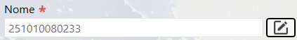
The parameter is set to read-only to prevent changes, but an Edit button is displayed next to it.
The Edit button opens a pop-up as follows:
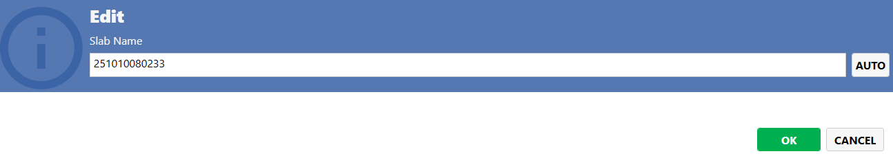
The user can update the slab name or press the AUTO button to restore the automatically generated name, then click “OK” to update the name.
Parameter removal
This option allows parameters considered unused by the user to be hidden. Their removal can be requested from our technicians during the initial installation.
Set parameters as mandatory
This optional feature allows selected parameters to be made mandatory when creating a new slab, i.e. parameters considered important by the user. This feature can be requested from our technicians during the initial installation.
Bulk Slab Import
This optional feature allows multiple identical slabs to be imported simultaneously.
This section describes the “Bulk Slab Import” optional feature, which allows multiple identical slabs to be loaded into the system. The system then manages the numbering of the slab names. This optional feature can be requested from our technician during the initial installation.
When this optional feature is enabled, the “Homepage” screen is displayed as follows:
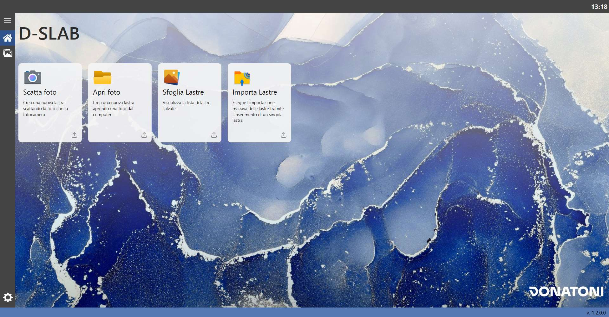
Card
A new selectable card is now available:
Import Slabs |
Window
When the window opens, the following screen is displayed:
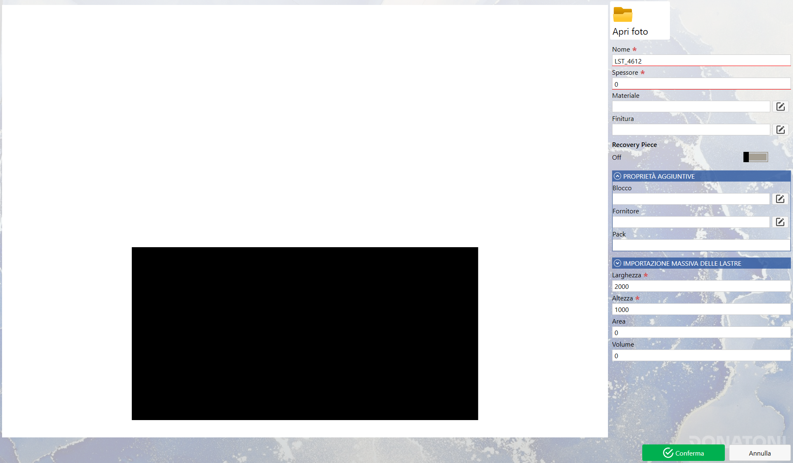
As can be seen, the screen is similar to Edit Slab, but with some differences.
Slab Preview
Unlike the other methods for adding a slab to the system (Take Photo and Open Photo), the slab can be loaded without an image by creating a simulated slab using a rectangle that represents the slab dimensions.
The size of this image is managed by the parameters in “Bulk Slab Import” (the drop-down menu currently closed). Other image data can also be configured, such as the background color, slab color and distance of the slab from the bottom edge.
The slab perimeter can be modified using the basic “Width” and “Length” parameters.
The Slab Preview becomes the same as in Edit Slab if a slab image is imported using the “Open Photo” button; in this case, the only difference between “Edit Slab” and “Import Slabs” is the ability to bulk-import slabs of the same type.
The following is the situation when a slab image is available for bulk import:
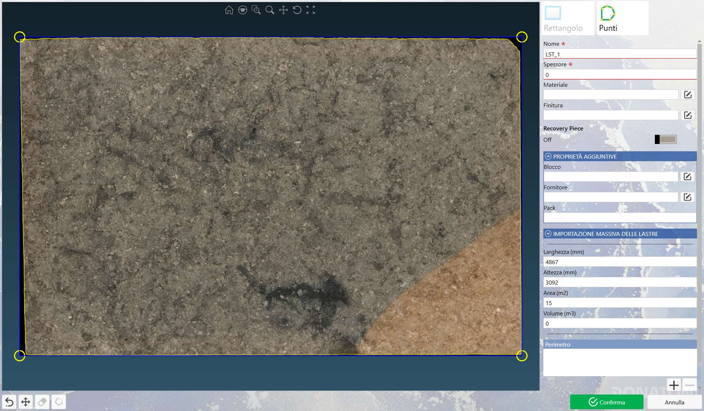
Parameters
Most parameters work exactly as described in the Edit Slab chapter in both cases; the data described below are those in the “BULK SLAB IMPORT” subsection.
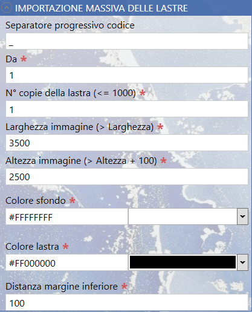
Basic bulk import parameters
The parameters in this group are displayed both when creating a “virtual” slab and when importing a slab image.
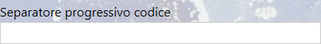 | Code sequence separator |
From | |
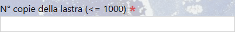 | No. of slab copies |
“VIRTUAL” slab parameters
The parameters in this group are displayed when bulk import is performed without an image:
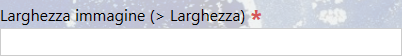 | Image Width |
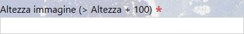 | Image Height |
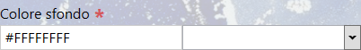 | Background Color |
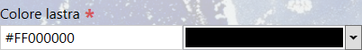 | Slab Color |
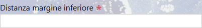 | Bottom Margin Distance |
This section describes the “Image Template” optional feature, which allows a background and watermarks to be configured and displayed when the slab is saved. This optional feature can be requested from our technician during the initial installation.
When this optional feature is enabled, the “Homepage” screen is displayed as follows:
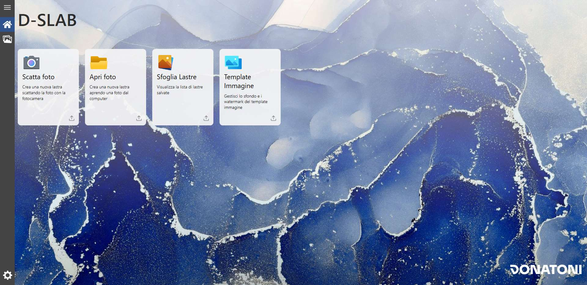
Card
A new selectable card is now available:
 | Image Template |
Window
When the window opens, the following screen is displayed:

The screen is divided into several sections:
Template Preview
The preview section displays a selected slab with the base background. The image can be modified using the Add Images section on the right.
This section is for display purposes only.
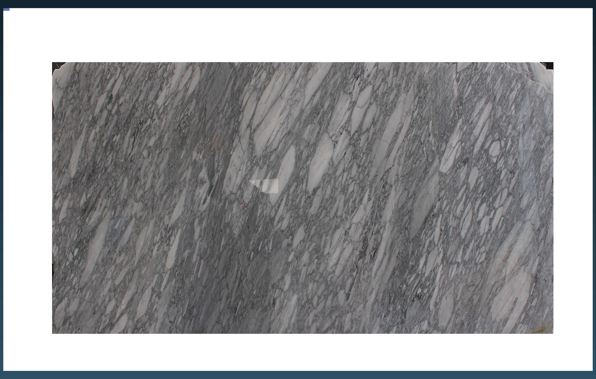
Slab Settings
The preview slab can be managed in this section using the following parameters:
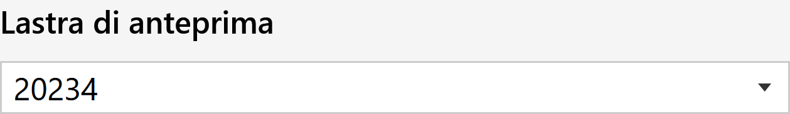 | Preview Slab |
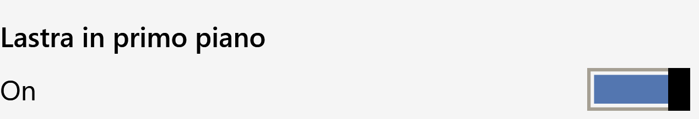 | Slab in Foreground |
Add Images
Images can be added to the template in this section.
Background
The buttons on the right can be used to perform actions on the image background:
Select Background | |
Remove Background | |
Open Folder |
Watermark
Images can be added above the background in this section so that they appear in the image.

The buttons in the lower section can be used to perform various actions:
Add | |
 | Remove |
 | Clone |
Open Folder | |
Move |
Watermark Properties
This section is displayed only when a watermark is selected from the list and allows its settings to be modified.
Corner |
X/Y Offset |
Width/Height |
Opacity |
Rotation |
Lower Section
The lower section manages all actions for the entire screen, from confirmation to changes.

Reset | |
Save |